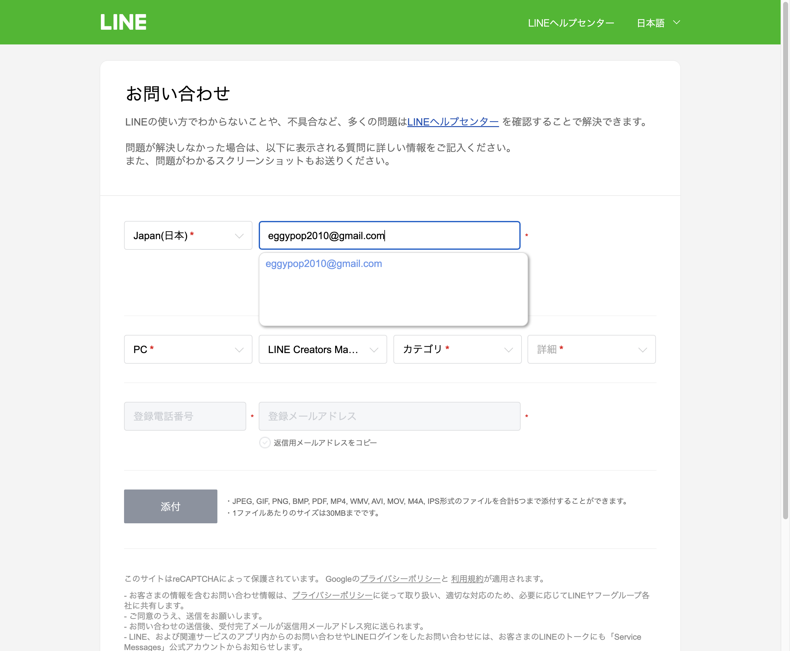

| 確認項目 | 結果 |
|---|---|
| Lovable宛: 件名・本文の英日セット自動生成 | できた |
| Lovable宛: 押すだけでログイン済みGmail下書きが開くリンク(compose_url) | できた |
| Lovable宛: IMAP経由でGmail下書きフォルダへ直接保存 | 未達（要 ~/.tamago/gmail_app_password 設置、次の一歩） |
| LINE宛: 返信用メールアドレス欄の自動入力 | できた |
| LINE宛: 自由記述の本文欄へのDOM自動入力（裏側） | できた |
| LINE宛: その本文欄が画面に表示され送信ボタンだけ残る状態 | 未達（カテゴリによりFAQ誘導へ分岐する仕様を実機で確認。次の一歩） |
| 窓口台帳(status/renraku_madoguchi.json)への貯蔵 | できた（4件、二度と同じ調べ物をしない） |